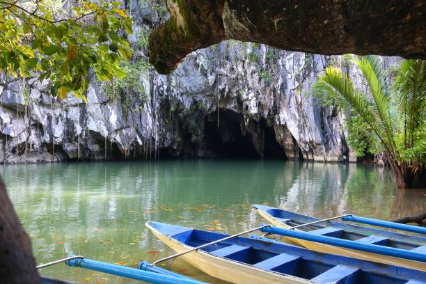
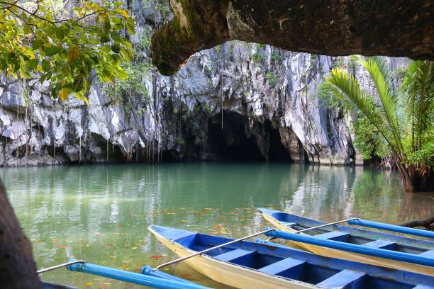

HOME
*Philippines Best Spots*
Welcome to the Pearl of the Orient Seas
This park features a spectacular limestone karst landscape with an underground river. One of the river's distinguishing features is that it emerges directly into the sea, and its lower portion is subject to tidal influences. The area also represents a significant habitat for biodiversity conservation. The site contains a full 'mountain-to-sea' ecosystem and has some of the most important forests in Asia.

 

Back